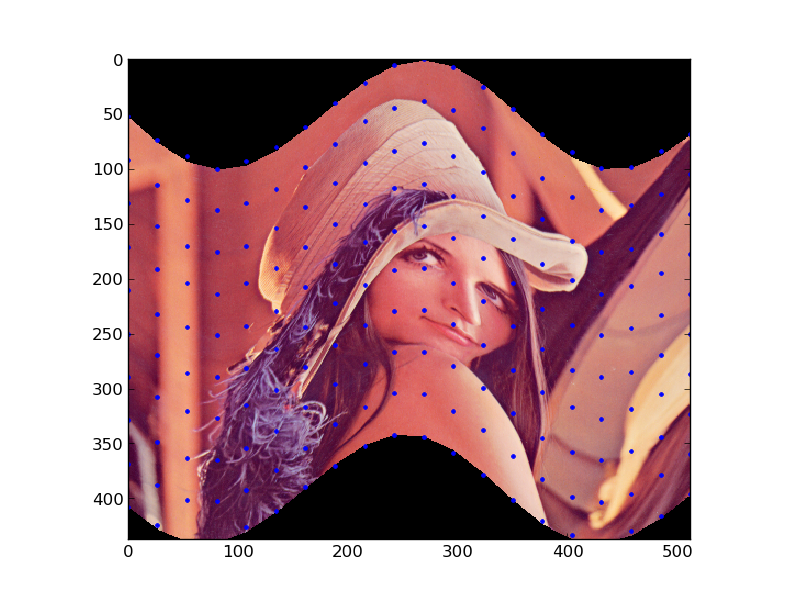

Piecewise Affine Transformation¶
This example shows how to use the Piecewise Affine Transformation.
import numpy as np
import matplotlib.pyplot as plt
from skimage.transform import PiecewiseAffineTransform, warp
from skimage import data
image = data.lena()
rows, cols = image.shape[0], image.shape[1]
src_cols = np.linspace(0, cols, 20)
src_rows = np.linspace(0, rows, 10)
src_rows, src_cols = np.meshgrid(src_rows, src_cols)
src = np.dstack([src_cols.flat, src_rows.flat])[0]
# add sinusoidal oscillation to row coordinates
dst_rows = src[:, 1] - np.sin(np.linspace(0, 3 * np.pi, src.shape[0])) * 50
dst_cols = src[:, 0]
dst_rows *= 1.5
dst_rows -= 1.5 * 50
dst = np.vstack([dst_cols, dst_rows]).T
tform = PiecewiseAffineTransform()
tform.estimate(src, dst)
out_rows = image.shape[0] - 1.5 * 50
out_cols = cols
out = warp(image, tform, output_shape=(out_rows, out_cols))
plt.imshow(out)
plt.plot(tform.inverse(src)[:, 0], tform.inverse(src)[:, 1], '.b')
plt.axis((0, out_cols, out_rows, 0))
plt.show()
Python source code: download (generated using skimage 0.7.0)